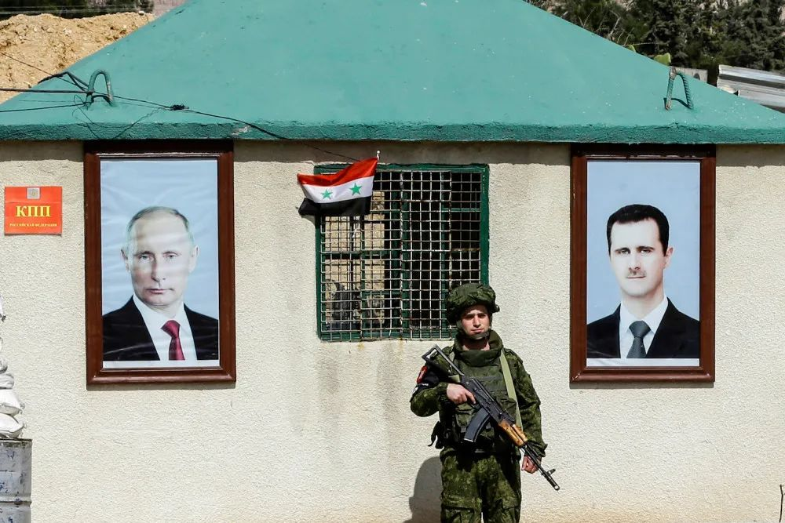
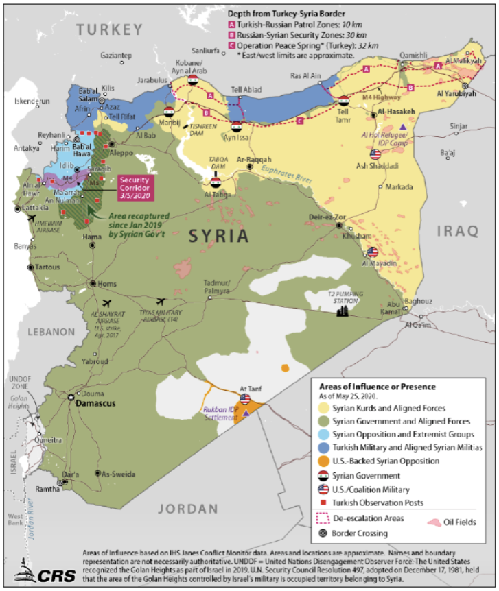

收录于合集

导读
近日，俄罗斯国际事务委员会执行主席科尔图诺夫撰文评析了俄美两国分别在叙利亚和阿富汗的军事介入，并总结了相关经验教训。作者认为， 俄国在叙利亚的干涉战争获得初步成功，而美国的阿富汗战争则是一场失败，背后的原因在于，俄国主张维持叙利亚政治现状，并能调动地区利益相关者共同参与。 2021年，阿萨德在充满争议的选举中以95.1%的得票率连任总统，这至少说明俄罗斯对阿萨德政权的扶持目前看来比美国的加尼政权更为成功。根据日内瓦安全政策中心（GCSP）的分析报告，俄国在叙利亚的战略模式和远期目标十分明确和务实，即以“势力范围”模式为中心，在承认叙利亚多方力量存在的前提下展开区域协作，从长远来看，目的则是扩大俄罗斯影响力，促进在中东实现多极化秩序。不过，该报告指出，俄国在叙利亚采纳的维持多方共存的策略，或有可能加剧叙利亚分裂。我们未必能以美国在阿富汗之失败，来过早预言俄国在叙利亚之成功。本文由 欧亚系统科学研究会 编译，以供读者参考，文章仅代表作者观点。
作品简介
作者： Andrey Kortunov，俄罗斯国际事务委员会执行主席
译者： 达琏懋
来源： 欧亚系统科学研究会
正文
美国对阿富汗的军事介入始于2001年10月，持续了近二十年。俄罗斯在叙利亚的军事行动始于2015年9月，距今也已超过六年。
两个大国均以打击国际恐怖主义的需要来论证其介入的合理性：美国的军事行动是针对基地组织和塔利班（在俄罗斯境内被禁止活动的恐怖组织），俄罗斯则是针对“伊斯兰国”（在俄罗斯境内被禁止活动的恐怖组织）和与之相关的叙利亚政府反对派中的激进组织。
很难对华盛顿和莫斯科的军事行动进行比较，它们的规模、任务和作战特点都截然不同。美国在阿富汗部署了其海军陆战队的大型特遣队，以及来自几十个盟友和伙伴国规模各异的军事部队。俄罗斯在叙利亚的代表则主要是空天军和规模相对较小的武警部队。
以美军为首的国际联军在阿富汗的伤亡人数超过3000人，其中美国人约占80%；俄罗斯在叙利亚的伤亡数字则整整低了一个量级。
01
挥金如土
美国在阿富汗二十年军事行动的总成本估计是个天文数字，约有1万亿-2万亿美元。据各种来源发布的数据，俄罗斯在叙利亚六年的军事支出约为100亿-150亿美元，这不仅远远低于美国，也低于许多美国的小盟国（例如这二十年间，仅德国就在阿富汗花费了约500亿美元）。
然而，巨额的支出并没有帮美国人取得胜利。尽管在美国开始军事介入的头三个月里，基地组织在阿富汗的据点便被消灭殆尽，幸存的塔利班成员也几乎在同一时间被赶到了邻国巴基斯坦，但最终美国及其盟友还是遭到了惨败。美国领导人二十年前制定的任务并没有完成，以美国为首的多国联军最终撤离阿富汗时也显得形色仓皇。
而另一边， 即便是莫斯科最顽固的反对派也会承认，俄罗斯在叙利亚赢得了一场胜利，至少绝对是目前的赢家。
与美国相比，俄罗斯没有明显的军事技术或地理优势，在运输便利性和其附带的物流方面，美国也明显更胜一筹。莫斯科在叙利亚只有两个成熟的基地——一个空军基地（赫迈米姆）和一个海军基地（塔尔图斯）可以利用。
而美国不仅使用了阿富汗领土上的全部军事设施（包括苏联在该国10年军事存在期间建立的基础设施），还在中亚建立了基地，并建起了诸多途经巴基斯坦、南高加索、中欧国家和俄罗斯等国的运输走廊。
（二） 非洲“第三任期”现象的缘起与发展
那么为什么最后华盛顿输了，而莫斯科却获得了成功？
首先，尽管美国和俄罗斯都声称在打击国际恐怖主义，但两国军事行动的目标却截然不同。
2015年，莫斯科拯救了叙利亚总统巴沙尔·阿萨德及其核心圈子代表的国家地位， 实际上是主张维护叙利亚的政治现状。
2001年， 美国急欲从根本上改变阿富汗现状，建立一个新的国家政权
，并实施了一项雄心勃勃的计划：建立一个现代化的世俗国家。显然，第二项任务要比第一项任务艰巨得多，尤其是当阿富汗还不具备成功构建这样一个国家的客观条件时。
其次， 俄罗斯在叙利亚的合作伙伴伊朗和土耳其是地区事务的主要参与者。
它们都曾经并继续在叙利亚拥有核心利益。尽管这些利益并不完全或同时与俄罗斯的利益相一致，但“阿斯塔纳三边机制”（Astana）已经展现出了其有效性和可持续性。
即使是如2020年初伊德利卜省局势升级般剧烈的危机，也未能将其摧毁。
美国在阿富汗的50多个盟友中，大多是当前和潜在的北约成员，从英国和土耳其到格鲁吉亚和乌克兰。这些国家中的大多数在阿富汗没有重要利益；它们的参与主要是为了表达对美国的忠诚和支持。此外，美国在阿富汗的军事计划，与随后其在2003年春对伊拉克的干预不同，得到了联合国安理会的完全认可。但事实证明，基于价值观而非利益的团结对于一项要持续多年的行动而言，并非一个牢靠的基础。
第三，俄罗斯在叙利亚打击的国际恐怖组织，仅把叙利亚看作其策划和开展行动的潜在战略基地之一。今天他们在叙利亚作战，明天便可能转移到邻国伊拉克，还有可能到利比亚、萨赫勒，或世界上任何条件合适的地方。
而塔利班是一个纯粹的阿富汗运动，其成员无别处可去；他们已经并将继续为自己的国家而战。即便本世纪初时国际联军已将塔利班士兵逼入巴基斯坦境内，他们仍拼尽全力挣扎着要回国。
伊斯兰“全球主义者”和伊斯兰“民族主义者”的动机有所不同，形象点说便是前者有“腿”，后者有“根”。
最后，总体而言，俄罗斯在叙利亚的军事行动比美国在阿富汗的行动准备得更为充分。这必须归功于俄罗斯的阿拉伯研究专家、外交官、军官以及情报部门人员对叙利亚和其周边国家局势较为准确的把握。
另一方面，美国在阿富汗的行动看起来并不是一次非常成功的即兴创作；美国在上世纪80年代与苏联对抗期间形成的对阿富汗的认识也与现实相去甚远。
克里姆林宫设法使其在叙利亚的有限存在得以持续，为俄罗斯预算所能承受，并为俄罗斯社会普遍接受。而白宫在阿富汗未能实现这一目标。
俄罗斯对叙利亚局势的成功介入中还有一个特别之处：巴沙尔·阿萨德与即将离任的阿富汗领导人不同，过去（现在仍然）受到美国和欧盟的制裁，而且近期举行的叙利亚总统选举结果没有得到西方的承认（尽管阿富汗近期所有选举结果也引发诸多争议）。此外，叙利亚迄今未能恢复在阿盟的正式席位。尽管如此，巴沙尔·阿萨德可以放心：2022年1月1日当他在自己的宫殿里醒来时，仍然是国家总统。而在美国度过大半生、并很长时间是该国公民的阿什拉夫·加尼的政治传记已经不光彩地结束了……
02
两种行为模式
2015年5月，“非洲晴雨表”（Afrobarometer）发布以“非洲公众强烈支持任期限制，反对领导人延长任期的努力”为题的报告，宣称在接受调查的29个总统制或半总统制国家中，平均有75%的人支持将总统任期限制为两任，即便在那些从未实行过任期限制或已经在宪法中取消任期限制的国家也是如此，如乌干达和多哥支持任期限制的比例均超过平均水平，达到80%以上。既然有如此多的人支持任期限制和反对延长任期，而且一些国家在谋求“第三任期”的过程中引发了严重的政治与社会问题，如布基纳法索发生军事政变并导致孔波雷下台，刚果（金）自2015年初以来已爆发多次大规模游行示威并引发骚乱，布隆迪因谋求“第三任期”而引发严重危机，共导致约500人死亡和28万-35万人逃到国外，那么，为何还有那么多非洲国家的领导人试图谋求“第三任期”，而且还大多取得了成功呢？
（一）“强人政治”与传统政治文化
如前所述，有些非洲国家在独立后建立了“强人政治”，领导人长期担任领导职务，如担任肯尼亚总统15年的乔莫·肯雅塔、担任坦桑尼亚总统23年的朱利叶斯·尼雷尔，以及担任扎伊尔总统32年的蒙博托等。这些领导人之所以能够长期执政，固然大多与他们在国家独立和建设进程中发挥的作用和树立的威望有关，还与非洲国家的立国基础有关，即大多非洲国家独立之初是松散之邦，需要强有力的领导人实现国家维稳的首要任务。直到现在，非洲国家仍秉持稳定为先的理念。此外，传统政治文化的影响也是其中一个重要的原因。张宏明认为，非洲传统政治文化主要包括两个方面的内容：“意见一致”或“一致同意的精神”；权力的神圣化与个人化。这种传统的政治文化“是建立在群体本位价值观念基础上的集权型政治文化”，与“非洲各国独立后随之而实行的中央集权、军人统治、个人崇拜”等有着密切的关系。
20世纪80年代末以来的民主化浪潮虽然使非洲国家纷纷开始了选举民主之路，但一方面，这种传统的政治文化使民主政治文化短期内难以在非洲落地生根，领导人谋求延长任期和建立威权政治及民众习惯于遵从权威的思想在短期内也仍然很难根除；另一方面，非洲的民主转型是西方强推而非自身政治、经济与社会发展的自然结果，“强人政治”的观念只是暂时遭到压制，一旦存在机会，必然就会出现谋求“第三任期”、寻求长期执政和建立“强人政治”的努力，一些年轻领导人更是如此。也正是因为如此，即便经历了多党民主化浪潮及任期限制成为大多数非洲国家的制度选择，但仍然有10个国家的领导人已经担任总统15年以上，6个甚至长达30年以上，平均为29.5年（见表2）。

▲ 大马士革，一名俄罗斯士兵站在普京和阿萨德两位总统的肖像之间。图源：LOUAI BESHARA/AFP/GETTY IMAGES
03
合时宜与不合时宜的争论
当然，目前俄罗斯在叙利亚取得的胜利还不能说是完全意义上的胜利。叙利亚的领土至今尚未完整收复，西部的伊德利卜省仍在土耳其控制之下，北部被库尔德反政府武装控制，南部的戈兰高地被以色列占领。叙利亚局势再度升级的风险依然存在，冲突后重建的任务也被进一步推迟。俄罗斯在叙利亚的军事行动应该在什么时候、什么情况下结束目前尚无定论，莫斯科是否有任何详细的退出战略也不得而知。
尽管如此，如果说关于俄罗斯军事介入叙利亚的长期后果还可以进行探讨，那么任何关于阿富汗行动之后果的争论都是多余的：美国及其盟友遭遇了显而易见的、惨痛至极的失败。现在的问题是如何使这次失败看起来不那么耻辱，并防止美国社会出现类似于半个世纪前出现的“越南综合征”般的“阿富汗综合征”。而如果共和党能成功地将“民主党在阿富汗偷走了我们的胜利”这一话题上升到内政议程，对这一问题的讨论甚至可能影响2024年总统大选的结果。
俄罗斯在叙利亚的军事介入大幅提升了莫斯科在阿拉伯世界的地位，也提高了俄罗斯在整个中东地区的威望
，毕竟在那里，可靠、连贯并且可预测的政策一直备受推崇。
而华盛顿作为战略伙伴和安全保障者的可靠性则再次受到了质疑。更值得怀疑的是，北约是否还有能力在远离其传统势力范围的地区成功开展行动。当然，在阿富汗的失败也会或多或少对美国军队的士气产生负面影响。
另外还有一点值得一提：美军撤离阿富汗只是美国减少其全球军事部署进程中最亮眼的一环。如今五角大楼不得不更积极地为自主，而不是依靠盟国和伙伴国部署的军事设施开展行动做准备。

▲ 叙利亚境内的势力分布（areas of influence in Syria as of May 2020）。其中叙利亚政府军控制了大部分国土，北方主要土耳其与库尔德武装控制，西北是反对派与恐怖主义势力据点。按照当前的军事现状，俄罗斯的主要影响力在中西部，土耳其和美国分别在北部和东部。图源：日内瓦安全政策中心（GCSP），www.gcsp.ch/publications/understanding- russias-endgame-syria-view-united-states
04
战后风景
通过对21世纪初两次国际干预的粗略对比，可以为未来得出哪些经验教训？
首先，无论是对对手的压倒性军事优势还是无限丰富的财政资源和广泛的国际支持，甚至是愿意维持数十年的占领，都无法保证最终的胜利。
不管出于何种原因，试图将某种特定的社会-经济和政治组织形式强加给一个还未做好准备的民族，注定将面临失败。
无论如何评价叙利亚领导人巴沙尔·阿萨德，必须承认，他至少得到了叙利亚一部分民众的支持。同理，无论对塔利班的评价如何，该运动显然也以这样或那样的方式反映了阿富汗相当一部分人口的利益。
如果没有大马士革现任领导人的参与，叙利亚局势不可能得到政治解决。而在被占领的20年间，阿富汗始终没有出现有效的中央政府或强大的政治和国家机构，腐败、裙带关系和部族忠诚度等问题没有得到解决；而对于大部分阿富汗人，尤其是各省居民而言，2021年的许多基础社会和经济服务仍然像2001年时一样无法获得。
当然，叙利亚也存在许多与阿富汗类似的严重社会经济问题，在国家治理效力方面也存在不少问题。但叙利亚的国家稳定性一直并将持续远远高于阿富汗。
此外，无论在叙利亚还是在阿富汗， 如果没有与地区主体的积极合作，便无法实现国家的成功构建。
任何基于统一民主价值观和对其主导国的忠诚而建立的国际联盟都无法替代与邻国的合作。对叙利亚而言，伊朗和土耳其就是这样不可替代的邻居。对于阿富汗而言，主要是巴基斯坦、中国、伊朗、中亚国家、俄罗斯，可能还有印度。也许富裕的海湾国家也会参与阿富汗的经济重建，在某些情况下，欧盟可能也会参与。
然而，参与决定阿富汗未来的主要外部角色是中国和巴基斯坦，中国必然将是该国的主要外国投资者和贸易伙伴。塔利班官方代表已经积极表态，欢迎中国参与阿富汗的经济重建。
巴基斯坦对塔利班拥有最广泛的影响力。在一定程度上可以说，塔利班的军事胜利也是巴基斯坦的胜利。但如果认为塔利班只是伊斯兰堡的傀儡，就大错特错了。举个例子，阿富汗塔利班还与巴基斯坦普什图人的激进分离主义运动保持着密切接触。
排在前三位的应该还有伊朗，它在阿富汗西部有着历史悠久且非常强大的影响力。伊朗与塔利班的关系向来复杂，甚至经常发生冲突，但考虑到德黑兰务实的外交政策，毫无疑问，它肯定能与胜利的塔利班达成某种妥协。
05
俄罗斯的阿富汗政策
在保障叙利亚国家稳定和领土完整方面，莫斯科在很大程度上发挥着核心作用，而在阿富汗问题上，俄罗斯并不属于第一梯队的参与者。莫斯科既没有中国的经济实力，也没有巴基斯坦的军事和政治工具，更不像伊朗一般，拥有与阿富汗的漫长共同边界。
同时，还有经久未愈的“阿富汗综合征”，以及公众对俄罗斯在阿富汗一切军事介入行为的普遍反感。
诚然，20世纪90年代末，莫斯科曾与阿富汗北部“北方联盟”中的乌兹别克人和塔吉克人两个派系进行过积极合作。国际联盟攻下阿富汗之后，北方联盟被解散，其部分领导人加入了当时的总统哈米德·卡尔扎伊的团队。如今即便有人说要重振北方联盟，但到目前为止，该联盟尚未对阿富汗战场上的力量平衡产生任何影响，也没有为莫斯科提供任何重要的额外机会。
但当下莫斯科能为自己在阿富汗设定的任务也是相当温和的，比2015年为俄罗斯军队在叙利亚设定的任务还要温和。
首先，必须防止阿富汗的军事和政治不稳定局势溢出俄罗斯中亚盟友的边界，避免难民和被迫移民的涌入。
目前已有超过250万阿富汗难民分散在世界各地，数据显示，这个数字很可能还会翻倍。
第二，莫斯科必须防止基地组织或“伊斯兰国”等国际恐怖组织将阿富汗变成其策划针对中亚或俄罗斯行动的据点。
从这个意义上讲，当前的阿富汗甚至比俄罗斯介入前的叙利亚还具有潜在威胁。另外，关于目前阿富汗领土上实际存在的国际恐怖组织规模，各方的估计参差不齐。一些信息来源断言，目前在阿富汗至少有3000名“伊斯兰国”成员，他们至少分布在九个军事基地当中。
还有人指出，“伊斯兰国”和塔利班之间正在进行秘密谈判，后者允许“伊斯兰国”成员在阿富汗的存在，条件是他们不干涉该国内部事务。很难说这些说法有多可信；也不排除这是一些故意在地区大国间破坏塔利班声誉的信息投放。
第三，尽可能限制阿富汗毒品流入俄罗斯和周边国家。
在国际联军进驻的头几年间，阿富汗的罂粟种植面积从2000公顷陡增至30000公顷。因此我们有理由怀疑国际驻军放任阿富汗毒品生意的空前增长，甚至直接或间接地参与了这一暴利产业。而俄罗斯无论过去还是如今都是阿富汗鸦片的主要出口市场之一。塔利班从20世纪90年代末便开始积极开展禁毒运动，打击生产违反伊斯兰教义的毒品的行为。美军撤离阿富汗之后，该国的鸦片生产和出口能否成功被禁还有待观察……
这在很大程度上也将取决于美国和欧洲如何应对阿富汗的政治变局。如果俄罗斯不得不在阿富汗战场上与欧盟和美国开展博弈，那么本来便实力有限的俄罗斯会显得更加捉襟见肘。如果西方开始对阿富汗实施国际孤立政策——就像若干年前对待叙利亚一样——那么喀布尔无论成立什么政府，都将会主动加强与俄罗斯的合作，以尽可能减少其对中国不可避免的依赖。
当然，在阿富汗，莫斯科还必须要小心翼翼地绕过许多暗礁：印度对阿富汗有着特定的看法和外交政策，俄罗斯如何避免因阿富汗问题导致与其关系复杂化？如何与跃跃欲试、希望在阿富汗事务中发挥独立作用的土耳其进行互动？面对美国试图在中亚国家保留其军事存在的意图，又该如何应对？不过另一方面，虽然上述问题和其他此类问题都很重要，但莫斯科还是应该集中更多精力保持与阿富汗事务主要地区参与国的战略协作。最后，俄罗斯军事介入叙利亚所取得的初步成效，也让人有理由期待克里姆林宫在阿富汗也能避免明显的误判和错误。
排版 | 屈媛媛
本文由欧亚系统科学研究会摘编，
文章观点不代表本平台观点。